오늘 만드는 것
오늘은 두 가지를 완성합니다. 지난 시간에 만든 식품 광고에 목소리와 음악을 넣어 끝내고, 새로 사람 등 뒤에서 자막이 스르륵 나타나는 SNS 영상을 만듭니다.
한눈에 보기전체 흐름
준비준비물
- 지난 시간 재료: 이미지 8컷, 영상 A·B (한 폴더에 모아 두기)
- 구글 계정 (AI 스튜디오·플로우 로그인)
- 캡컷 PC 프로그램
- 이어폰 (나레이션 들어 보기)
- 재료가 없거나 크레딧이 모자라면 강사님이 나눠 주는 연습 재료로 따라 합니다.
안내표시 읽는 법
- 🟢 공통: 모두 같이 따라 합니다.
- 🔵 확장: 빨리 끝난 분, 또는 집에서 해 봅니다.
- 막힐 때 안 될 때 먼저 보는 곳
- 한 걸음 더 더 잘하고 싶을 때
- 사진 속 빨간 번호는 설명 번호와 같습니다.
- 💡 영상 만들기는 기다리는 시간이 있습니다. STEP 2 영상은 먼저 만들기를 눌러 두고, 기다리는 동안 STEP 1을 합니다.
목소리와 음악으로 광고 완성하기
캡컷에서 30초를 맞추고 → AI 스튜디오로 나레이션(광고 목소리)을 만들어 넣고 → 음악을 깔아 한 번에 내보냅니다.
한눈에 보기🟢 30초 광고 설계도
| 구간 | 재료 | 움직임 | 자막 · 목소리 |
|---|---|---|---|
| 0~3초 | 컷 1·2·3 (1초씩) | 확 다가가기 / 옆으로 밀기 | 큰 제목 글씨 (목소리 없음) |
| 3~13초 | 영상 A | 그대로 | ① |
| 13~17초 | 컷 4·5 (1초) · 6 (2초) | 다가가기 | ② |
| 17~27초 | 영상 B | 그대로 | ③ |
| 27~30초 | 컷 7 (1초) · 8 (2초) | 다가가기 / 멀어지기 | ④ 가게 이름 |
따라 하기🟢 캡컷 조립 순서
- 캡컷 → 이름을 「광고_메뉴이름」으로 바꿉니다.
- 비율을 9:16(세로)으로 맞춥니다.
- 재료 폴더를 통째로 가져와 위 표 순서대로 메인 줄(트랙: 재료를 놓는 가로줄)에 놓습니다.
- 이미지는 5초로 들어옵니다. 오른쪽 끝을 끌어 1초 또는 2초로 줄입니다.
- 이미지마다 키프레임(시작·끝 모습을 찍어 두면 사이를 저절로 움직여 주는 점)으로 다가가기·밀기를 넣습니다.
- 자막 ①~④를 넣습니다. 문장은 아래 나레이션 대사와 똑같이 씁니다.
- 이미지 사이에는 전환을 넣지 않습니다. 툭툭 끊어야 휙휙 튑니다.
- 맨 위 시간이 30초인지 확인합니다. 아직 내보내지 않습니다.
설정🟢 AI 스튜디오 열기
- 크롬에서 아래 주소로 들어갑니다. 구글 계정으로 로그인합니다(무료).
- 화면 위에 Playground, 오른쪽에 Gemini 3.8 Flash TTS(글을 목소리로 바꿔 주는 AI)가 보이면 맞게 들어온 것입니다.
- 오른쪽 칸이 안 보이면 오른쪽 위 을 누릅니다.
https://aistudio.google.com/generate-speech
화면 보기🟢 AI 스튜디오 음성 화면
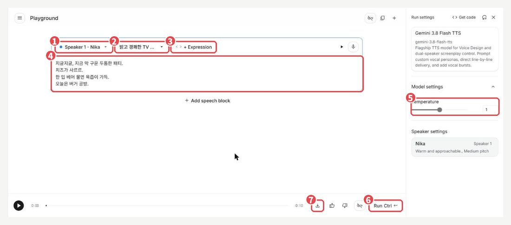
따라 하기🟢 ① 목소리 고르기
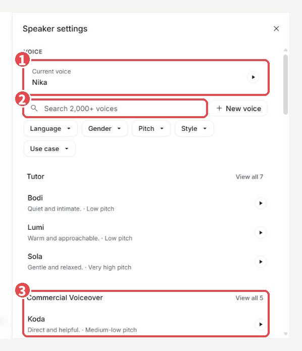
- 1 지금 목소리 이름 옆 ▶를 눌러 들어 봅니다.
- 2 검색 칸에 이름(Nika 등)을 쳐서 찾습니다.
- 3 Commercial Voiceover(광고 성우) 묶음에 광고용 목소리가 있습니다.
| 목소리 | 느낌 |
|---|---|
| Nika | 따뜻하고 친근함 (강사 시연) |
| Koda | 또렷하고 믿음직함 |
| Zeno | 시원하고 자신감 있음 |
따라 하기🟢 ② 말투(Style) 정하기
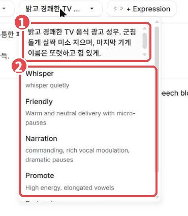
1 맨 위 칸에 말투를 직접 씁니다. 2 아래 Whisper·Friendly 같은 기본 말투를 골라도 됩니다.
밝고 경쾌한 TV 음식 광고 성우. 군침 돌게 살짝 미소 지으며, 또박또박 자연스러운 한국어로.
따뜻하고 정겨운 목소리로, 밥상 앞에서 말하듯이 천천히. 마지막 가게 이름은 또렷하게.
내 차례🟢 ③ 대사 넣고 만들기 — 4문장을 한 번에
- 내 메뉴 대사를 복사해 대사 칸 하나에 붙여 넣습니다. 문장마다 줄을 바꿉니다.
- Run을 누르고 들어 봅니다. 마음에 안 들면 다시 Run(같은 대사도 매번 조금씩 다르게 읽습니다).
- 마음에 들면 아래 다운로드를 눌러 저장합니다.
| 메뉴 | 4문장 전체 길이 (직접 재 봄) |
|---|---|
| 🍔 버거 | 약 11초 |
| 🌶️ 떡볶이 | 약 11초 |
| 🍚 비빔밥 | 약 10.5초 |
한 문장은 2~3.5초라서 설계도의 ①~④ 자리에 넉넉히 들어갑니다.
지글지글, 지금 막 구운 두툼한 패티. 치즈가 사르르. 한 입 베어 물면 육즙이 가득. 오늘은 버거 공방.
보글보글, 매콤한 소스가 끓어올라요. 쫀득한 떡 한가득. 치즈까지 사르르, 그 시절 그 맛. 오늘은 떡볶이집.
지글지글, 뜨거운 돌솥이 깨어납니다. 알록달록 나물 가득. 노른자 톡, 고소함이 한 그릇에. 한 그릇 정성.
🔵 확장감정 태그 넣기
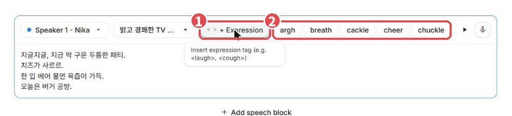
1 + Expression을 누르면 2 태그 단추가 나옵니다. 넣고 싶은 문장 사이에 커서를 두고 단추를 누릅니다.
<short pause>잠깐 쉬기 ·<laugh>웃음 ·<breath>숨- 태그는 영어 그대로 둡니다. 한국어 대사 사이에 넣어도 됩니다.
<long pause>를 넣어도 실제로는 0.3~0.5초 정도로 짧게 쉽니다.
따라 하기🟢 ④ 캡컷에 나레이션 넣기
- 받은 목소리 파일을 캡컷으로 가져와 아래 오디오 줄에 놓습니다.
- 재생하면서 들어 봅니다. 파형(소리 크기를 보여 주는 물결 모양)이 납작한 곳이 문장 사이입니다.
- 문장이 끝나는 곳에 재생 막대를 두고 (단축키 Ctrl+B)합니다. 4조각이 됩니다.
- 조각을 설계도 자리로 옮깁니다.
목소리 놓는 자리 ① 3초 조금 뒤 (영상 A) ② 13초 (이미지 컷 4~6) ③ 17초 조금 뒤 (영상 B) ④ 가게 이름 27초 (마무리) - 자막 ①~④와 목소리가 같은 때에 나오는지 재생해 봅니다.
따라 하기🟢 ⑤ 배경 음악 찾기
둘 중 한 곳에서 무료 음악을 받습니다.
유튜브 스튜디오 → 왼쪽 → 장르·분위기 거르기 → 다운로드. 유튜브에 올릴 때 가장 마음 편합니다.
사이트 위 → 검색 → 다운로드. 회원가입하면 받기 편합니다.
upbeat food commercial
warm acoustic cooking
https://studio.youtube.com
https://pixabay.com/ko/music/
따라 하기🟢 ⑥ 음악 넣고 한 번에 내보내기
- 음악을 맨 아래 줄에 놓고 30초에서 자릅니다.
- 음악 클릭 → 오른쪽 → 볼륨을 -15dB 정도로 낮춥니다. 목소리가 또렷하게 들릴 때까지 조절합니다.
- 같은 곳의 을 1~2초로 올려 끝을 부드럽게 줄입니다.
- 처음부터 끝까지 한 번 봅니다: 30초 · 자막과 목소리 · 음악 크기.
- 오른쪽 위 → 해상도 1080p → 내보내기.
막힐 때이럴 땐 이렇게
- 목소리 목록에서 Korean을 고르니 아무것도 안 나와요
- 언어 거르기를 풀고 All languages로 둡니다. 기본 목소리도 한국어를 잘 읽습니다.
- 목소리가 두 사람으로 나와요
- 「+ Add speech block」(말풍선 추가)을 누르면 다른 목소리(Speaker 2)가 붙습니다. 말풍선은 하나만 씁니다.
- 어디서 잘라야 할지 모르겠어요
- 문장 사이 쉼이 짧습니다(0.3~0.8초). 파형만 보지 말고 들으면서 자릅니다. 캡컷 을 먼저 돌리면 문장마다 자막 칸이 생겨 자를 곳이 보입니다.
- 목소리가 구간보다 길어요
- 조각 클릭 → 를 1.1배 정도로 올리거나, 대사를 줄여 다시 만듭니다.
- 음악 때문에 목소리가 안 들려요
- 음악 볼륨을 -18~-20dB까지 더 낮춥니다.
한 걸음 더온도(Temperature)는 무엇일까? — "AI의 애드리브"
한 줄 정의: 온도는 AI가 애드리브를 얼마나 치느냐입니다.
| 온도 | AI는 이렇게 읽어요 |
|---|---|
| 낮게 (0.5) | 대본 그대로 읽는 모범생. 여러 번 시켜도 비슷함 |
| 보통 (1, 기본값) | 적당히 자연스럽게 |
| 높게 (1.5~2) | 애드리브를 막 침. 어떤 건 대박, 어떤 건 엉뚱 |
노래방으로 생각하면
- 늘 원곡대로 부르는 친구 = 낮은 온도
- 부를 때마다 꺾고 늘이는 친구 = 높은 온도
- 신나게 부를지 슬프게 부를지(분위기)는 곡 선택 = Style 칸이 정합니다.
이렇게 써 보세요
- 처음엔 1 그대로 만듭니다.
- 더 다른 느낌을 듣고 싶으면 1.2~1.5로 올리고 여러 번 Run → 마음에 드는 것을 고릅니다.
- 너무 엉뚱하면 다시 1로.
옴니 1.2로 걷는 영상 만들기
구글 플로우의 새 영상 모델 옴니 1.2로, 사람이 왼쪽에서 들어와 일정한 걸음으로 오른쪽까지 걸어가는 세로 영상을 만듭니다. 시작 사진과 끝 사진을 주면 그 사이를 AI가 채웁니다.
알아 두기옴니 1.2는 무엇이 달라졌나
- 최대 15초까지 한 번에 (1.1은 10초)
- 같은 사람·같은 배경을 더 잘 유지
- 카메라가 덜 흔들림 (고정 촬영이 잘 됨)
- 만든 영상을 글로 고쳐 달라고 할 수 있음
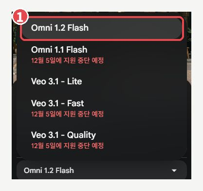
1 모델 목록 맨 위가 옴니 1.2입니다. 옴니 1.1과 Veo 3.1 Fast·Quality에는 「12월 5일에 지원 중단 예정」이 붙어 있습니다.
알아 두기크레딧(사용료 점수)
| 설정 | 10초 | 15초 |
|---|---|---|
| 360p (연습용 화질) | 10 | 20 |
| 720p (올리기용 화질) | 30 | 60 |
- 이미지 만들기는 0 크레딧으로 나옵니다(유료 요금제 화면 기준).
- 무료 계정은 하루 50 크레딧, 10초까지입니다(2026년 11월 기준). 연습은 360p로 충분합니다.
- 만들기 버튼을 누르기 전 「생성 시 ○○ 크레딧」 글자를 꼭 봅니다.
미리 보기이렇게 만들어집니다 (강사 시연 · 9:16 · 10초)
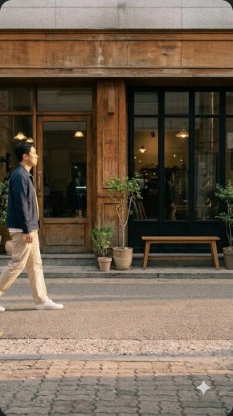
왼쪽 끝
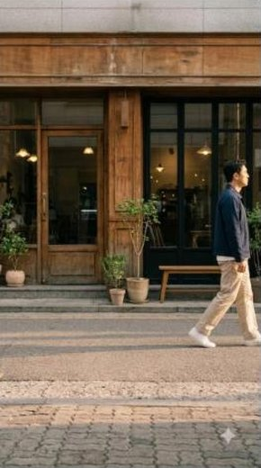
오른쪽 끝
따라 하기🟢 ① 시작 사진 만들기
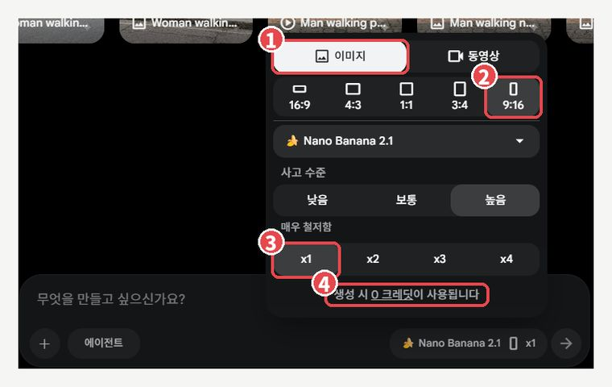
- 플로우에서 를 만듭니다.
- 아래 입력창 오른쪽 설정 단추를 누르고 1 이미지 → 2 9:16 → 3 x2(2장)로 고릅니다. 4 크레딧을 확인합니다.
- 아래 프롬프트(AI에게 주는 주문서) 하나를 복사해 붙여 넣고 → 만들기.
- 두 장 중 몸과 얼굴이 오른쪽을 보고, 걷는 자세인 사진을 고릅니다.
내 차례🟢 시작 사진 프롬프트
Vertical 9:16 photo, straight side view (pure profile) of a cozy Korean street in front of a cafe with a warm wooden storefront and large windows, late afternoon soft light. A Korean man in his 30s wearing a navy blue jacket, white T-shirt, beige trousers and white sneakers is walking from left to right: he is at the far LEFT side of the frame, full body visible from head to shoes, his face and body clearly facing RIGHT (the direction he walks), mid-stride with one foot forward. Plenty of empty space on the right side of the frame. Camera at chest height, perfectly level, completely still, wide enough to see the whole body with space above the head. Photorealistic. No text, no logo, no other people.
Vertical 9:16 photo, straight side view (pure profile) of a Korean street in front of a small flower shop with large windows full of plants and flowers, soft daylight. A Korean woman in her 30s wearing a beige trench coat, light blue jeans and white sneakers is walking from left to right: she is at the far LEFT side of the frame, full body visible from head to shoes, her face and body clearly facing RIGHT (the direction she walks), mid-stride with one foot forward. Plenty of empty space on the right side of the frame. Camera at chest height, perfectly level, completely still, wide enough to see the whole body with space above the head. Photorealistic. No text, no logo, no other people.
장소를 바꾸고 싶으면 cafe with a warm wooden storefront 부분만 바꿉니다. 예: bakery(빵집), bookstore(서점).
따라 하기🟢 ② 끝 사진 — 시작 사진을 [+]로 첨부
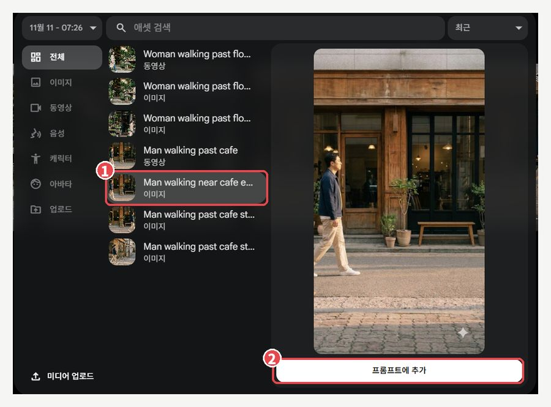
- 아래 입력창 왼쪽 를 누릅니다.
- 1 목록에서 시작 사진을 누르면 오른쪽에 크게 보입니다(아직 안 들어감).
- 2 「프롬프트에 추가」를 눌러야 들어갑니다.
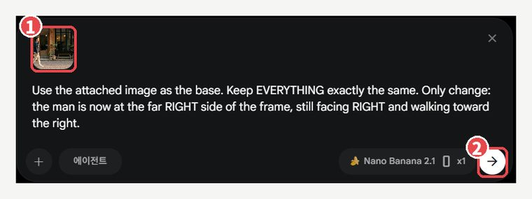
1 입력창 위에 사진이 붙었는지 보고 → 아래 프롬프트를 붙여 넣고 → 2 화살표로 만듭니다.
내 차례🟢 끝 사진 프롬프트
Use the attached image as the base. Keep EVERYTHING exactly the same: same place, same camera position and framing, same light, same man with the same clothes. Only change: the man has walked to the far RIGHT side of the frame, close to the right edge, still facing RIGHT and still walking toward the right, mid-stride with the other foot forward. The left and center of the frame now show only the empty street and the shop. Vertical 9:16, photorealistic, no text.
Use the attached image as the base. Keep EVERYTHING exactly the same: same place, same camera position and framing, same light, same woman with the same clothes. Only change: the woman has walked to the far RIGHT side of the frame, close to the right edge, still facing RIGHT and still walking toward the right, mid-stride with the other foot forward. The left and center of the frame now show only the empty street and the shop. Vertical 9:16, photorealistic, no text.
함정 주의사진을 눌러 들어간 화면에서 「수정」하지 마세요
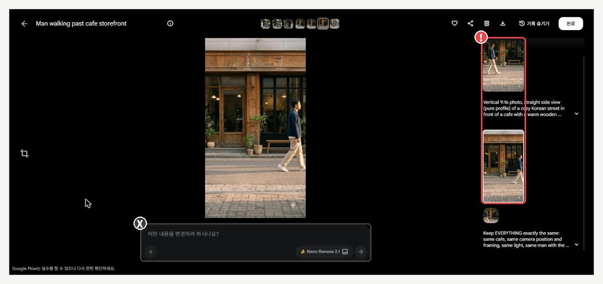
사진을 눌러 크게 연 화면 아래 칸 X에 "오른쪽으로 옮겨 줘"라고 쓰면, 새 사진이 생기는 게 아니라 같은 사진의 새 버전으로 덮어씁니다.
! 오른쪽에 버전이 쌓이고, 바깥 목록에는 마지막 버전만 남습니다. 그러면 영상 만들 때 시작 사진을 고를 수 없게 됩니다.
이미 덮어썼다면: 시작 사진 프롬프트로 시작 사진을 다시 만들면 됩니다.
설정🟢 ③ 영상 설정
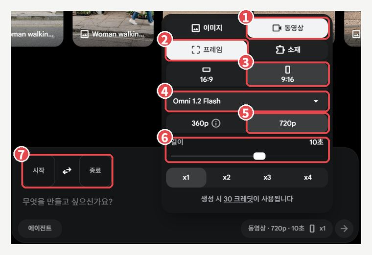
- 1 동영상 2 프레임 3 9:16
- 4 Omni 1.2 Flash
- 5 화질: 연습은 360p, 올릴 것은 720p
- 6 길이 10초 (시작+끝 사진은 10초까지)
- x1 → 크레딧 숫자 확인
- 7 아래에 시작 · 종료 칸이 생깁니다.
따라 하기🟢 ④ 시작·종료 칸에 사진 넣기
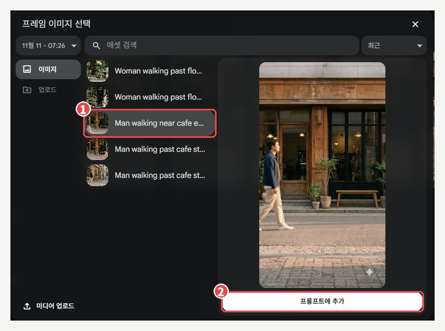
- 시작 칸을 누릅니다 → 1 목록에서 시작 사진 → 2 「프롬프트에 추가」.
- 종료 칸도 똑같이 끝 사진을 넣습니다.
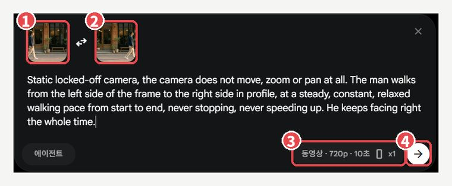
1 시작=왼쪽 끝 사람, 2 종료=오른쪽 끝 사람인지 눈으로 확인합니다. 같은 사진이 두 번 들어가는 실수가 잦습니다. 칸을 다시 누르면 비워집니다.
3 설정 확인 → 프롬프트 붙여 넣기 → 4 만들기.
내 차례🟢 영상 프롬프트
Static locked-off camera, the camera does not move, zoom or pan at all. The man walks from the left side of the frame to the right side in profile, at a steady, constant, relaxed walking pace from start to end, natural arm swing, never stopping, never speeding up. He keeps facing right the whole time. The background, shop and lighting stay exactly the same. Realistic, natural motion. No text, no other people.
Static locked-off camera, the camera does not move, zoom or pan at all. The woman walks from the left side of the frame to the right side in profile, at a steady, constant, relaxed walking pace from start to end, natural arm swing, never stopping, never speeding up. She keeps facing right the whole time. The background, shop and lighting stay exactly the same. Realistic, natural motion. No text, no other people.
핵심 말: Static locked-off camera(카메라 고정) · steady, constant pace(일정한 걸음) · keeps facing right(계속 오른쪽 보기). STEP 3 배경 제거와 마스크가 쉬워집니다.
결과 보기🟢 ⑤ 결과 확인하기
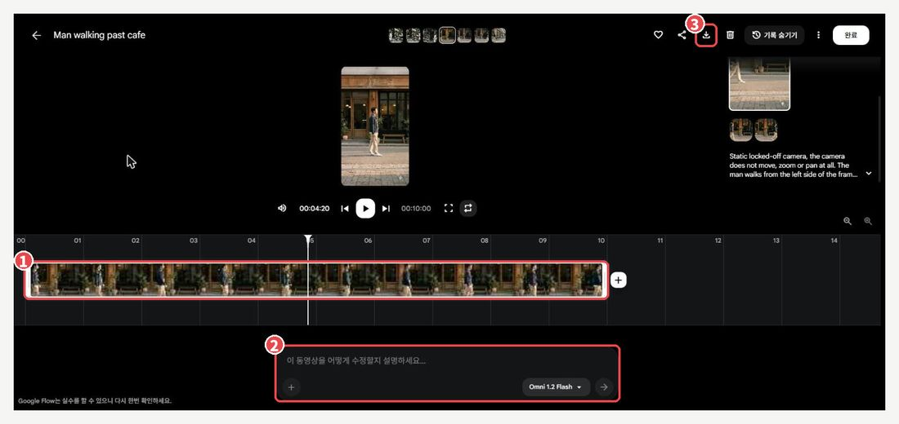
- 1 아래 줄을 누르면 그 순간으로 갑니다. 처음·가운데·끝을 눌러 봅니다.
- 2 여기에 글로 고칠 점을 쓰면 영상을 고쳐 줍니다(크레딧 듦).
- 3 다운로드해서 캡컷으로 가져갑니다.
강사 시연 영상: 2초마다 사람 위치
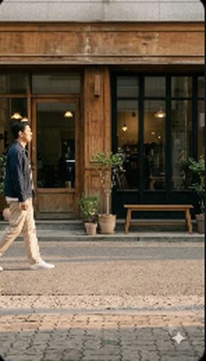
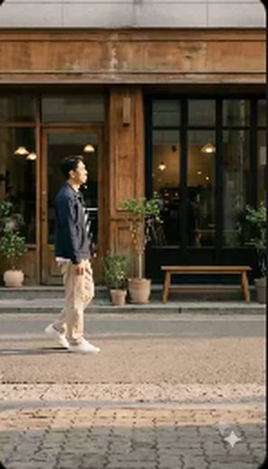
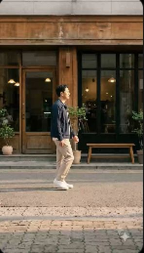
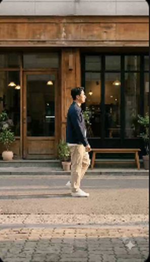
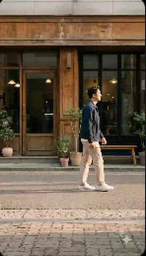
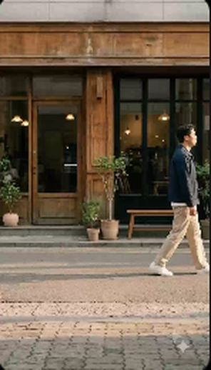
가운데(4~8초)에서 조금 느려졌다가 끝에서 빨라집니다. 걸음은 완벽히 일정하지 않으니, STEP 3에서 1초마다 마스크 위치를 맞춰 줍니다.
막힐 때이럴 땐 이렇게
- 사람이 왼쪽을 보고 있어요 / 차렷 자세예요
- 영상 만들기 전에 사진에서 잡아야 합니다. 사진을 다시 만듭니다.
- 종료 칸이 계속 빙글빙글 돌아요
- 길이가 15초로 되어 있으면 그렇습니다. 10초로 내립니다.
- 시작 사진이 목록에 없어요
- 「수정」으로 덮어쓴 경우입니다. 시작 사진을 다시 만듭니다.
- 카메라가 따라가요 / 확대돼요
- 프롬프트 맨 앞
Static locked-off camera가 빠졌는지 봅니다. 다시 만듭니다. - 10초 전에 사람이 화면 밖으로 나가요
- 괜찮습니다. 캡컷에서 나간 뒤 부분을 잘라 냅니다.
🔵 확장 · 시연에이전트에게 맡겨 보기
에이전트(말로 부탁하면 사진·영상을 알아서 만들어 주는 도우미)를 켜면 위 ①~④를 대화로 할 수 있습니다.
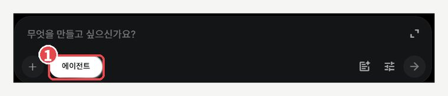
1 입력창의 에이전트 단추가 흰색이면 켜진 것입니다.
SNS용 세로(9:16) 영상을 만들고 싶어요. 꽃집 앞 길을 정확히 옆에서(사이드뷰) 찍은 장면이고, 30대 한국 여성(베이지 트렌치코트, 청바지, 흰 운동화)이 화면 왼쪽 끝에서 등장해서 일정한 걸음으로 오른쪽 끝까지 걸어가요. 얼굴과 몸은 계속 오른쪽(걷는 방향)을 봐요. 카메라는 고정, 움직이지 않아요. 방법: 먼저 시작 프레임(여성이 왼쪽 끝)과 종료 프레임(같은 배경, 여성만 오른쪽 끝) 이미지를 9:16으로 만들어서 보여주세요. 제가 확인한 다음에 Omni 1.2 Flash, 360p, 10초, 1개로 영상을 만들어 주세요. 글자·로고·다른 사람은 넣지 마세요.
🔵 확장 · 시연에이전트와 주고받은 실제 대화
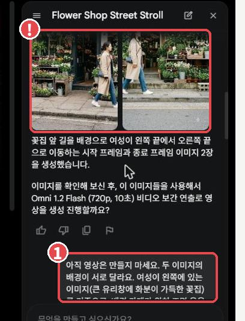
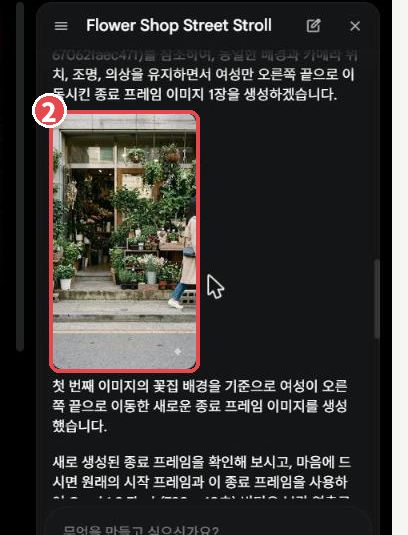
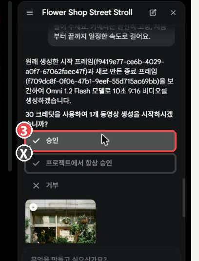
| 직접 만들기 (🟢 공통) | 에이전트 (🔵 확장) | |
|---|---|---|
| 하는 일 | 설정·사진 넣기를 내가 다 함 | 말로 부탁, 확인만 함 |
| 좋은 점 | 원하는 대로 정확히 조절 | 설정을 몰라도 됨, 시연에서는 원본 사진을 알아서 기억함 |
| 주의할 점 | 「수정」 덮어쓰기, 「프롬프트에 추가」 안 누르기 | 사진을 꼭 확인하고 고친 뒤 승인, 「항상 승인」 금지 |
| 결과 (시연) | 방향·카메라 고정 잘 됨 | 배경 한 번 고친 뒤 잘 됨 |
에이전트 입력창은 Enter로 안 보내질 때가 있습니다. 오른쪽 아래 화살표를 누릅니다.
사람 등 뒤에서 나타나는 자막 만들기
SNS에서 많이 보이는 그 효과입니다. 사람이 지나가면 등 뒤에서 글자가 스르륵 드러납니다. 캡컷의 복합 클립 · 마스크 · 키프레임을 씁니다.
미리 보기이렇게 됩니다
그림은 이해를 돕는 예시입니다. 실제로는 캡컷에서 부드럽게 이어집니다.
원리3겹 샌드위치 + 커튼
- 같은 영상을 두 줄로 겹칩니다.
- 위 줄은 배경을 지워 사람만 남깁니다.
- 그 사이에 자막을 끼웁니다 → 사람이 글자 앞을 지나갑니다.
- 자막에 마스크(화면 일부만 보이게 가리는 커튼)를 씌우고, 커튼 끝을 사람 등에 붙여 같이 움직입니다(키프레임).
따라 하기🟢 ① 같은 영상 두 줄 만들기 + 자석 끄기
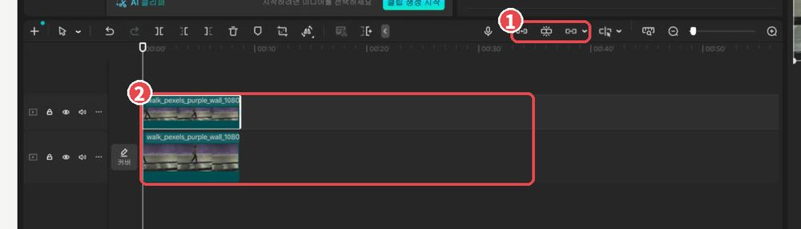
- 캡컷 새 프로젝트 → STEP 2 영상을 가져와 아래 줄에 놓습니다. 사람이 화면 밖으로 나간 뒤는 잘라 냅니다.
- 1 마이크 아이콘 오른쪽 자석 단추 3개를 모두 눌러 회색으로 끕니다. 켜져 있으면 줄을 쌓을 때 옆으로 밀립니다.
- 재생 막대를 0초에 둡니다.
- 영상 클릭 → Ctrl+C → Ctrl+V. 2 같은 영상이 바로 위 줄, 0초에 하나 더 생깁니다.
따라 하기🟢 ② 위 줄 배경 지우기
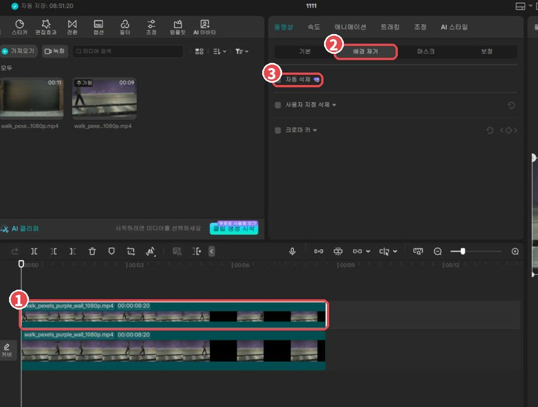
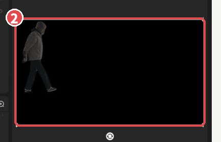
- 1 위 줄 영상을 클릭합니다.
- 오른쪽 탭 → 2 → 3 에 체크(💎 유료 기능). 위 줄에 「자동 오려내기 적용 중 ○%」가 뜨고 잠깐 기다리면 끝납니다.
- 확인(오른쪽 그림): 아래 줄 맨 왼쪽 눈 아이콘을 눌러 숨기면 2 검은 바탕에 사람만 걸어갑니다. 확인했으면 눈을 다시 켭니다.
내 차례🟢 ③ 자막 넣기
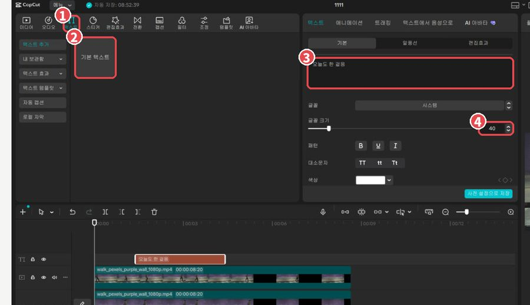
- 왼쪽 위 1 → 2 를 타임라인으로 끌어다 놓습니다. 맨 위에 새 줄로 생깁니다.
- 3 오른쪽 글 칸에 자막을 씁니다. 4 글꼴 크기를 키우고 B(굵게)를 누릅니다.
- 자막 막대를 0초로 옮기고, 오른쪽 끝을 끌어 영상 끝까지 늘립니다.
- 미리 보기 화면에서 글자를 사람이 지나갈 높이(몸통쯤)에 둡니다.
오늘도 한 걸음
퇴근길 카페 산책
NEW OPEN
세로(9:16) 화면은 좁습니다. 한 줄 8글자 안쪽이 잘 보입니다.
따라 하기🟢 ④ 줄 순서 맞추기 — 3겹 샌드위치
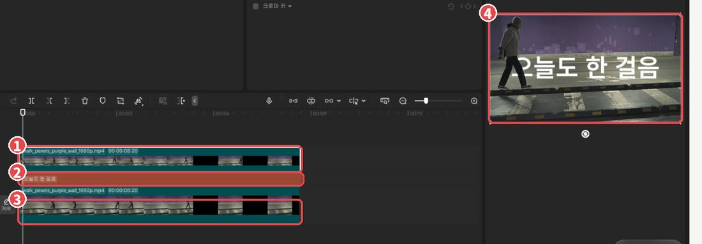
자막이 맨 위에 있으면 글자가 사람을 덮습니다. 배경 지운 영상을 끌어 자막보다 위로 올립니다.
- 1 맨 위: 배경 지운 사람
- 2 가운데: 자막
- 3 맨 아래: 원래 영상
4 미리 보기에서 사람 다리가 글자 앞을 지나가면 성공입니다. (아직 글자는 처음부터 다 보임)
따라 하기🟢 ⑤ 자막을 복합 클립으로
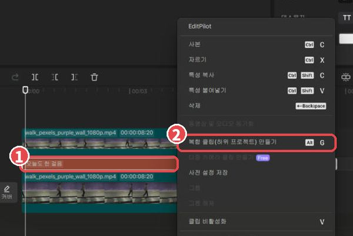
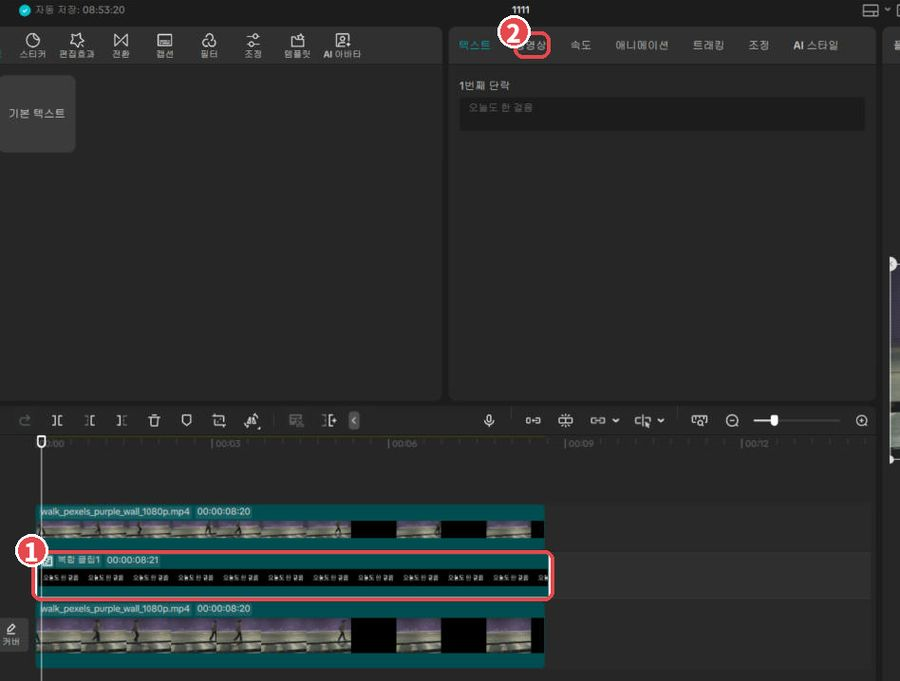
- 1 자막 막대에서 마우스 오른쪽 클릭 → 2 (단축키 Alt+G).
- 오른쪽 그림: 1 자막 줄이 「복합 클립1」이라는 영상 모양으로 바뀌고, 2 오른쪽 위에 탭이 생깁니다. 이제 마스크를 쓸 수 있습니다.
따라 하기🟢 ⑥ 마스크 분할 + 각도 270°
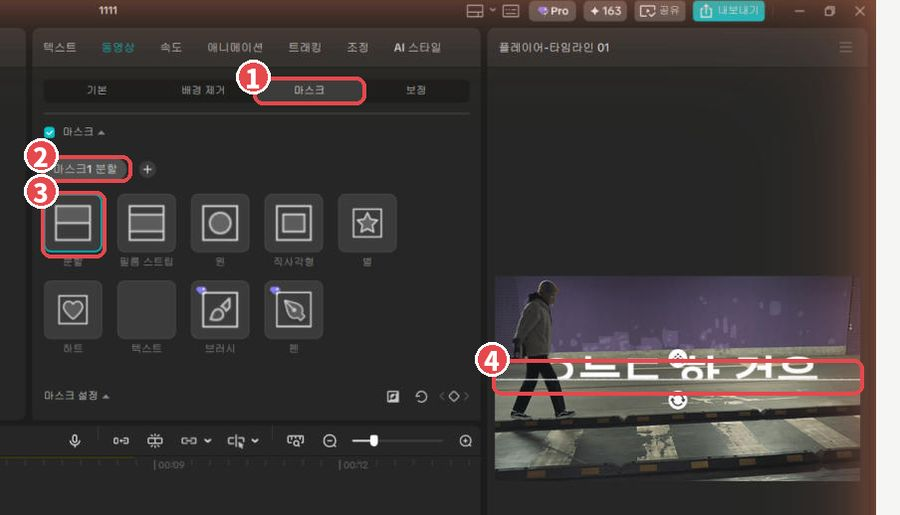
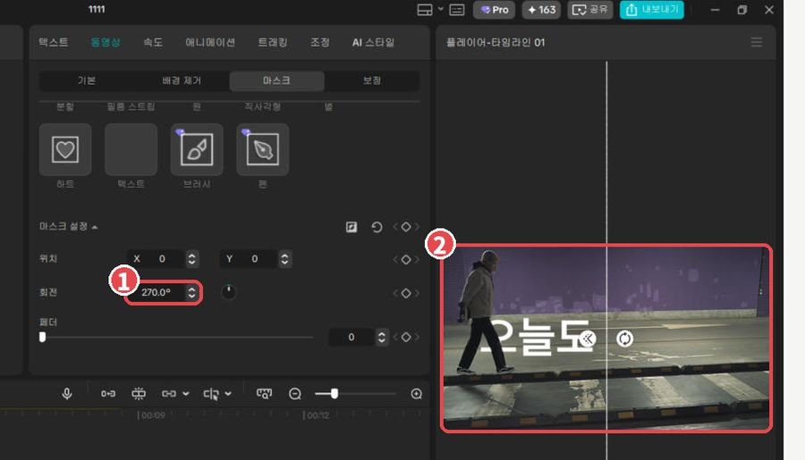
- 복합 클립 클릭 → → 1 → 2 → 3 . 4 화면이 가로선으로 나뉩니다.
- 아래로 내려 마스크 설정의 1 회전 칸에 270을 넣습니다(오른쪽 그림).
- 2 선이 세로로 서고, 선 왼쪽 글자만 보이고 오른쪽은 가려집니다. 왼쪽→오른쪽으로 걷는 사람에게 딱 맞는 방향입니다.
따라 하기🟢 ⑦ 키프레임으로 등 따라가기
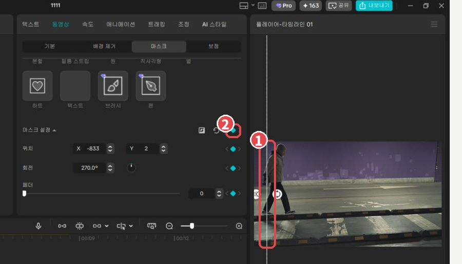
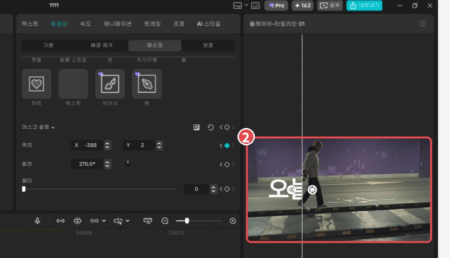
- 재생 막대 0초. 미리 보기에서 1 세로선을 끌어 사람 등(뒤쪽 몸선)에 붙입니다. 글자가 모두 가려집니다.
- 2 마스크 설정 줄 오른쪽 ◇를 눌러 첫 점을 찍습니다. 자막 막대 맨 앞에 작은 마름모가 생깁니다.
- 재생 막대를 1~2초 뒤로 옮기고, 선을 다시 등에 붙입니다(오른쪽 그림). 선을 옮기기만 해도 점이 저절로 찍힙니다. 2 등 뒤로 「오늘」이 나타납니다.
- 사람이 끝에 갈 때까지 되풀이 → Space로 재생.
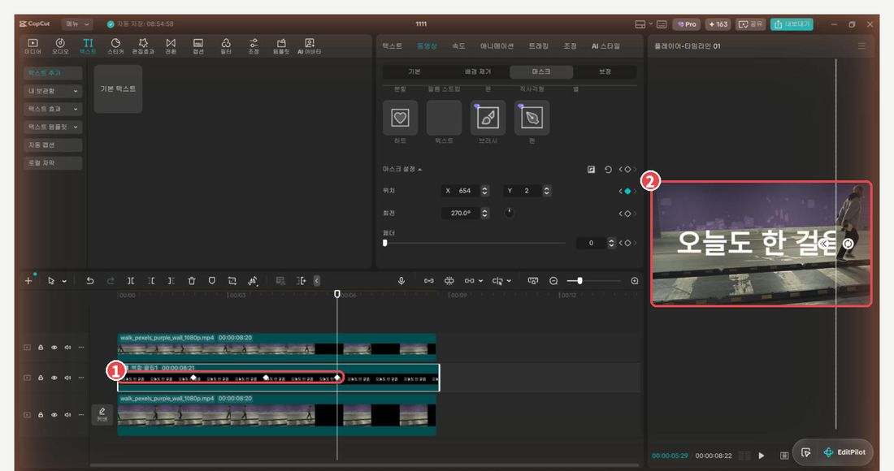
1 2초마다 점을 찍은 모습. 2 6초에는 「오늘도 한 걸음」이 거의 다 드러났습니다.
따라 하기🟢 ⑧ 마무리하고 내보내기
- 처음부터 끝까지 봅니다: 사람은 글자 앞, 글자는 등 뒤에서 나오는지.
- 원하면 음악을 아래에 깝니다(-15dB 정도, 끝 페이드 아웃).
- → 1080p. 9:16이면 쇼츠·릴스에 바로 올릴 수 있습니다.
막힐 때이럴 땐 이렇게
- 글자가 반대쪽부터 나와요 / 사람 앞쪽이 보여요
- 회전을 90으로 바꿉니다(270↔90). 마스크 설정 줄의 반전 아이콘을 눌러도 됩니다.
- 마스크 메뉴가 없어요
- 자막을 복합 클립으로 안 만든 것입니다. ⑤를 합니다.
- 사람이 글자 뒤로 숨어요
- 줄 순서가 틀렸습니다. 배경 지운 영상이 맨 위여야 합니다.
- 사람이 두 명처럼 겹쳐 보여요
- 두 영상 줄의 시작이 어긋났습니다. 둘 다 0초에 맞춥니다.
- 줄을 쌓으면 옆으로 밀려요
- 자석 단추 3개가 켜져 있습니다. 모두 끕니다.
- 숫자 칸에 쓴 값이 이상하게 들어가요
- 숫자 칸 대신 미리 보기에서 선을 직접 끌어 옮깁니다.
- 글자가 등에서 떨어졌다 붙었다 해요
- 떨어지는 곳에서 멈추고 선을 다시 붙여 점을 하나 더 찍습니다.
한 걸음 더배경만 흑백으로 — 효과 더하기
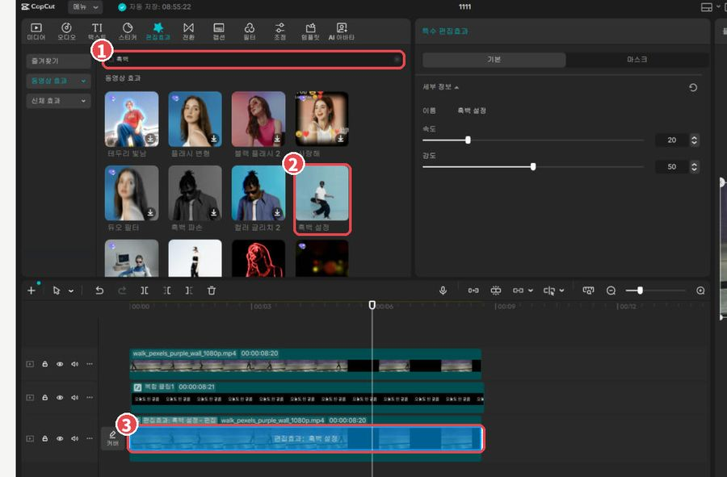
사람은 맨 위 줄에 따로 있으니, 맨 아래 원래 영상에만 효과를 주면 사람은 그대로, 배경만 바뀝니다.
- 위쪽 → 1 검색 칸에 흑백.
- 2 흑백 설정(또는 흑백 파손·블랙 플래시)을 끌어 3 맨 아래 원래 영상 막대 위에 떨어뜨립니다. 막대에 「편집효과: 흑백 설정」이 붙으면 그 영상에만 걸린 것입니다.
- 오른쪽에서 속도·강도를 조절합니다.
더 해 보기
- 다른 효과로 바꿔 보기: 플래시 계열, 네온 계열
- 마스크를 원으로 바꿔 사람을 따라다니는 동그라미 만들기
- STEP 1 광고 끝에 이 효과로 가게 이름 넣기